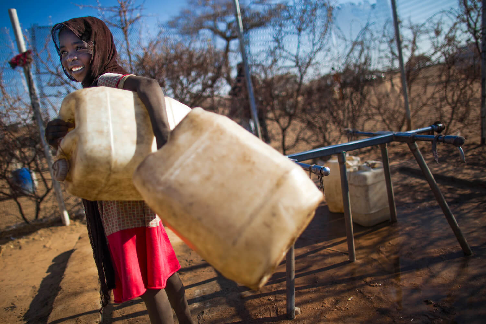
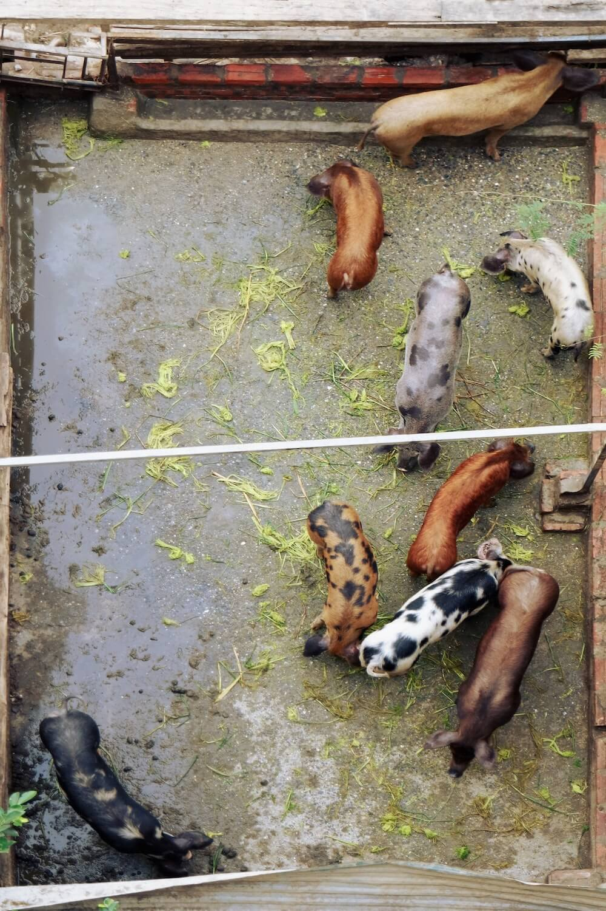

Microorganisms such as bacteria, fungi and viruses are so tiny that they can only be seen under the microscope, yet once they spread, they are incredibly difficult to completely eradicate. To date, society has been using antimicrobials to
treat many microbe-induced infections in humans, animals and plants. Soon, however, this
economic impact will become a difficult reality.
Today, the world is under a tremendous threat of widespread antimicrobial resistance (AMR)—a phenomenon where microbes gain resistance to antibiotics. A radical transformation in AMR management is crucial in order to achieve the
Sustainable Development Goals (SDGs) set by the United Nations (UN), such as global health, food security and development.

Many internally displaced people in refugee camps experience both water scarcity and lack of proper sanitation, increasing the prevalence of bacteria infections and AMR. | United Nations Photo
Why should we be worried?
Once a germ acquires AMR, it can multiply and spread its resistance quickly. Some can directly give it to other bacterial species via horizontal gene transfer—the exchanging of genes conferring resistance between individual bacterium.
Consequently, society is already witnessing a concerning growth in AMR. This makes infections, such as pneumonia, tuberculosis and salmonellosis hard to treat, as antimicrobial drugs are being rendered ineffective.
According to the World Bank, 700,000 people die every year due to AMR. If no action is taken, this number could potentially reach 10 million by 2050. From an economic standpoint, our global society would face a 3.8% reduction in GDP. This
is due to the likely increase in livestock mortality rates, as a result of succumbing to AMR. However, this
economic impact will be felt differently around the globe, where poorer countries will be hit the hardest.
What is accelerating the rise of AMR?
Microorganisms reproduce and spread very rapidly, due to short generation times and their ability to reproduce asexually—in this case by literally splitting in half. This increases the accumulation of genetic mutations in a given period of
time, which leads to fast evolution.
A mutation is often fatal to the organisms, but it could sometimes have a beneficial effect. In bacteria this beneficial effect happened to be the acquisition of resistance against antibiotic medicines. AMR organisms exist in humans,
animals, plants and even in external environments, such as water, soil and air.
Evolution is a natural process, but this could be encouraged by high selection pressure. Such instances can be the overuse and misuse of antibiotics, which is one of the main drivers of AMR emergence.
Additionally, poor hygiene and sanitation, infection and disease mismanagement in health-care facilities and farms, as well as the lack of both awareness and legislation enforcing appropriate antimicrobial practices are also the root cause
of AMR emergence.

Livestock are also prone to bacterial infections if appropriate antimicrobial practices are not enforced. | Pierredb / Unsplash
GW4 AMR
To tackle this urgent global issue, GW4 AMR Alliance—a ‘One Health’ AMR research consortium at the University of Bath, Bristol, Cardiff and Exeter was formed to drive the research effort on AMR.
Their missions are 1) to deliver world-leading research to bridge the critical knowledge gaps, 2) to renovate AMR management strategies by incorporating cross-institutional, synergistic research that
boosts engagement, translation and
impact, 3) to assist in the development of future AMR researchers by creating a collaborative, interdisciplinary research and training environment.
‘One Health’ is a globally recognised framework aimed to facilitate the design and implementation of policies, regulations and research, enabling effective communication and collaboration within multiple sectors. This
cooperative approach
is the key to AMR research in the long run, as well as to the improvement of the public health protection in both humans, animals and plants.
The One Health AMR research channels its effort into four main areas: ‘Mitigating and managing infections in humans and animals; Tackling AMR within the framework of sustainable development; Towards understanding selection
and transmission; Reducing AMR, optimising treatment and discovery science.’
How does GW4 AMR Alliance tackle SDGs?
A One Health framework aligns with six UN SDGs, namely ‘SDG2: Zero Hunger’, ‘SDG3: Good Health and Wellbeing’, ‘SDG6: Clean Water and Sanitation’, ‘SDG9: Industry, Innovation and Infrastructure’, SDG12: Responsible Consumption and
Production’, and ‘SDG17: Partnership for the Goals’.
Bristol Vet School and Rothamsted Research institute, found in North Wyke Farm (Devon), are focusing on food production and global food security. The Bristol Vet School team particularly addresses the challenge of sustainable livestock
intensification by understanding the epidemiology, infections and transmission of diseases, in order to optimize the use of antibiotics and inform stakeholders.
The group led, by Professor Adilia Warris at the University of Exeter, is addressing global health by investigating fungal infections. Recent work includes a study on
neonatal antifungal consumption against invasive candidiasis (yeast-induced infections).
The team reported that more than half of those patients who were prescribed the neonatal treatment had low risk of developing such infection. Moreover, prescribed antifungal drugs were commonly underdosed. The team hopes that this data
will assist Antifungal Stewardship in developing appropriate prescription guidance.
Illustration depicts a three-dimensional (3D), computer-generated image, of a group of Gram-positive, Streptococcus pneumoniae bacteria. | CDC / Unsplash
One of the key GW4 AMR Alliance members, Professor Jean-Yves Maillard from the University of Cardiff, was involved in the revolutionary discovery of a novel method to disinfect water. By using reactive oxygen species in place of chlorine,
the team was able to disinfect water without leaving chemical residue—unlike in the case of using chlorines.
This is a breakthrough as its bactericidal and virucidal effect is 108 more effective compared to
chlorination (the
addition
of
chlorine to
water). Although it is yet to be tested under the real-world conditions, it holds a great potential in securing sustainable
water supply.
However, although this article speaks of the cautions and negative health implications surrounding bacteria, it should be noted that not all microorganisms are our enemy. Dr Susanne Gebhard at the University of Bath looks to enhance
city infrastructure by using bacteria-based self-healing, such as Bacillus cohnii,in order to facilitate the sealing of concrete cracks in buildings and roads.
One of her recent
collaborative studies showed that the addition of B. cohnii spores to cement mortar mix has increased the precipitation of calcite (which acts as a seal), bringing the healing ratio up to 70% after 56 days. This performed much
better
when compared to the same mixture without the spore, which had its healing ratio limited to 40%.
Girl drinking clean water, purified via sunlight. | Titanium dioxide Manufacturers Association
What can YOU do to mitigate AMR?
Like most global issues, everyone has a role to play to mitigate the further growth of AMR. As an individual, you should reduce the infection risk by regularly washing hands, only use antibiotics if prescribed by a certified doctor and
always follow their guidance (don’t stop your antibiotics course too early even if you feel better!).
Agricultural sectors, which notoriously pump their livestock with extensive amounts of antibiotics, should only use them on their livestock if advised by veterinarians and avoid giving them to healthy livestock.
Additionally, one can reduce
the infection risk by maintaining high hygiene and animal welfare on farms, which would simultaneously also lead to higher food production.
Politicians must also implement a national action plan against AMR, which could include investing in AMR research, improving surveillance of AMR infections, engaging communities, raising the awareness of good practices and the consequences
of AMR.
‘It may be hard to picture what is happening, as these organisms are unseen by the naked eye.’
New antibiotic development is an ongoing project, but humanity simply cannot keep up with the rate of AMR emergence. Our healthcare systems could collapse at any moment and soon simple surgeries would become dangerous to carry out in fear
of infections.
It may be hard to picture what is happening, as these organisms are unseen by the eye. It is like climate change, the molecular processes are unseen, though the impacts are detrimental. Humans tend to only act when they see the drastic
consequences already happening.
But this is the reality. Microorganisms are silently overtaking our persistent effort. Thus, AMR is a threatening global dilemma that urges international coordination between multiple nations, sectors, stakeholders, and communities to
ensure the survival of humanity.
Featured Image: United Nations
Ferreras-Antolín, L., Irwin, A., Atra, A., Dermirjian, A., Drysdale, S., Emonts, M., McMaster, P., Paulus, S., Patel, S., Kinsey, S., Vergnano, S., Whittaker, E. and Warris, A., 2019. Neonatal Antifungal Consumption Is Dominated by
Prophylactic Use; Outcomes From The Pediatric Antifungal Stewardship. The Pediatric Infectious Disease Journal, 38(12), pp.1219-1223.
Richards, T., Harrhy, J., Lewis, R., Howe, A., Suldecki, G., Folli, A., Morgan, D., Davies, T., Loveridge, E., Crole, D., Edwards, J., Gaskin, P., Kiely, C., He, Q., Murphy, D., Maillard, J., Freakley, S. and Hutchings, G., 2021. A
residue-free approach to water disinfection using catalytic in situ generation of reactive oxygen species. Nature Catalysis, 4, 575-585.
Skevi, L., Reeksting, B., Gebhard, S. and Paine, K., 2021. Bacteria Based Self-healing of Later-Age Cracks in Concrete. In: Kanavaris F., Benboudjema F., Azenha M. (eds) International RILEM Conference on Early-Age and Long-Term Cracking
in RC Structures. CRC 2021. RILEM Bookseries, vol 31. Springer, Cham.